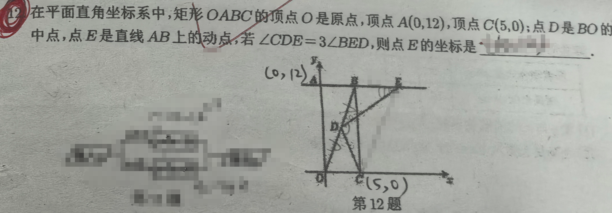
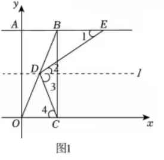
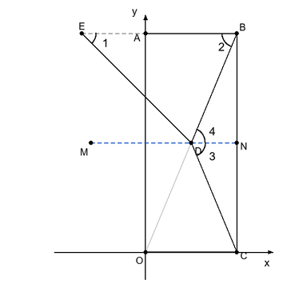
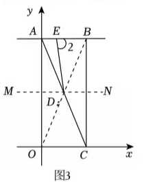

p12 矩形 OABC 角度三等分
几何综合
矩形性质中点坐标等腰三角形全等三角形分类讨论
★★★★

📷 点击查看原图
题目：在平面直角坐标系中，矩形 OABC 的顶点 O 是原点，顶点 A(0,12)，顶点 C(5,0)；点 D 是 BO 的中点，点 E 是直线 AB 上的动点，若 ∠CDE=3∠BED，则点 E 的坐标是 ______。
📌 知识点总结（点击展开／收起）
📌 知识点总结
| 知识点 | 说明 |
|---|
| 矩形顶点顺序 | O→A→B→C 顺时针：O(0,0),A(0,12),B(5,12),C(5,0)，AB 是顶边 |
| 中点坐标 | D=(2xB+xO, 2yB+yO)=(2.5,6) |
| 矩形对角线 | OB=AC=52+122=13（勾股定理） |
| 等腰三角形 | △BDC 中 BD=DC=213，BD=21OB |
| 辅助线构造 | 过 D 作 MN∥AB（水平线 y=6），创造内错角和全等条件 |
| 平行线内错角 | ∠1=∠2（内错角），∠3=∠4（内错角） |
| 等角对等边 | ∠BDE=∠BED⇒BD=BE（情形 1 和 2） |
| 全等三角形 | △BED≅△CND（情形 2 辅助证明） |
| 分类讨论 | E 在 B 右侧 / A 左侧 / AB 段内，三种情况逐一排除 |
| 反证法 | 情形 3 用反证法证明 ∠CDE>180° 矛盾，排除 |
| 大边对大角 | AB<AD 推出 ∠ADB<60°，用于排除情形 3 |
✍️ 解题过程（按 E 位置分三种情形讨论）
基本数据
矩形 OABC：O(0,0)，A(0,12)，B(5,12)，C(5,0)
D 是 BO 中点：D(2.5,6)
矩形对角线 OB=52+122=13（勾股定理）
BD=21OB=213，又 DC=2.52+62=213
所以 BD=DC，△BDC 是等腰三角形。
🔑 关键观察：BD=DC=213，是 OB 的一半。这个等腰结构是分类讨论的核心。
情形 1：E 在 AB 延长线上 B 右侧（图 1）

图 1：E 在 AB 延长线上 B 右侧，过 D 作 l∥AE
🔍 点击查看原题
第一步：基本条件与角度标记
∵ 四边形 ABCD 是矩形，顶点 A(0,12)，C(5,0)
∴AE∥OC（AB 与 OC 都水平）
过 D 作直线 l∥AE，则 l∥AE∥OC
由 l∥AE，得 ∠1=∠2（内错角）
第二步：等腰与角度传递
D 是 BO 中点：OD=21OB
∵OB=OC2+AO2=52+122=13，∴BD=213
又 DC=2.52+62=213，所以 OD=DC=BD
∴△BDC 等腰，∠3=∠4
∵l∥OC，∴∠4=∠BOC（内错角）
∵ 矩形对角线 ∠BOC=∠ABO
∴∠3=∠ABO
第三步：利用 ∠CDE=3∠BED
∵∠CDE=3∠BED（已知），且设 ∠BED=∠1
由图 1 知 ∠CDE=∠2+∠3
3∠1=∠2+∠3=∠1+∠3（∠1=∠2）
∴∠3=2∠1，∠ABO=2∠1
∵l∥AE，∴∠BDE=∠1（内错角）
第四步：求 E 坐标
在 △BDE 中 ∠BDE=∠BED=∠1，所以 BD=BE（等角对等边）
BD=BE=213
∵B(5,12)，E 在 y=12 上，E 在 B 右侧
xE=5+213=223
✅ 情形 1 答案：
E(223, 12)
情形 2：E 在 BA 延长线上 A 左侧（图 2）

图 2：E 在 BA 延长线上 A 左侧，过 D 作 MN∥AE（图中 ∠BED=∠1, ∠EBD=∠2, ∠CDN=∠3）
🔍 点击查看原题
第一步：作辅助线 MN
当 E 在 BA 的延长线上，过点 D 作直线 MN∥AE 如图所示。
∵ 四边形 ABCD 是矩形，MN∥AE，
∴EB∥OC∥MN
第二步：角度关系
∠ADM=∠ACO（同位角）
∠MDO=∠DOC（内错角）
∠1=∠MDE（内错角）
∵ 四边形 ABCD 是矩形，顶点 A(0,12)，C(5,0)
第二步补充：说明 ∠2=∠3
① 先证 △BDC 等腰（BD=DC）。 在矩形 OABC 中相邻边互相垂直，故 BC⊥OC，即 △BOC 是以 C 为直角的直角三角形；BO 是其斜边，而 D 是 BO 的中点。由直角三角形斜边中线定理（斜边中点到三个顶点距离相等）：
DB=DC=DO=21BO=213
于是 BD=DC，△BDC 是等腰三角形，腰为 BD、DC，底边为 BC。
② ∠2=∠4（平行线内错角）。
③ ∠4=∠3（等腰三角形顶角平分线）。
④ 串起来：
∠2=∠4=∠3
∴∠BOC=∠ACO，∠BAC=∠OCD，AC=122+52=13
第三步：利用 ∠CDE=3∠1 推等量
∵∠CDE=3∠1（已知）
∴∠MDC=2∠1（由图 2 角度关系）
由第二步补充知 ∠2=∠3；又 M、D、N 共线成平角，∠MDC 与 ∠3 互补，且前面已得 ∠MDC=2∠1，故
∠3=180°−∠MDC=180°−2∠1
∴∠2=∠3=180°−2∠1
在 △BED 中：
∠EDB=180°−∠1−∠2
=180°−∠1−(180°−2∠1)=∠1
∴∠EDB=∠1，所以 BE=BD（等角对等边）
第四步：求 E 坐标
BD=BE=213
BE=AB+AE=5+AE=213
AE=213−5=23
E 在 A 左侧：xE=0−23=−23
✅ 情形 2 答案：
E(−23, 12)
情形 3：E 在线段 AB 内部（A 和 B 之间）（图 3）

图 3：E 在线段 AB 内部（最终舍去）
第一步：基本条件
∵ 四边形 ABCD 是矩形，顶点 A(0,12)，C(5,0)
∴∠BOC=∠ACO，∠BAC=∠OCD
AC=122+52=13
第二步：角度范围分析
∵∠2=∠BAD+∠ADE（由图 3）
∴∠2>∠BAD
∵AB=5<6.5，AD=BD=213=6.5
∴∠ADB<60°（在 △ABD 中，大边对大角）
由辅助线 MN∥AE：∠2=21(180°−∠ADE)
∵∠ADE<60°，∴180°−∠ADE>120°
∴∠2>60°
第三步：矛盾结论
∵∠CDE=3∠BED（已知）
∴∠CDE=3∠BED>3×60°=180° （矛盾，三角形内角不能大于 180°）
⚠️ 情形 3 结论：
E 不在线段 AB 内部（∠CDE>180° 矛盾，舍去）
📋 最终答案
🎯 综合三种情形：
E(−23, 12) 或 E(223, 12)
📚 南昌/江西中考类似题（同类拓展）
题1（2024·江西·解答）：如图，在 △ABC 中，BD 平分 ∠ABC 交 AC 于 D，过 D 作 BC 的平行线交 AB 于 E。(1)判断 △BDE 的形状并说明理由；(2)方法应用：角平分线+平行线构造中，①图中有几个等腰三角形（ ）A.3 B.4 C.5 D.6；②已知部分边长求某线段长。
💡 答：(1)等腰三角形（∠ABD=∠DBC，DE∥BC⇒∠EDB=∠DBC，故 ∠ABD=∠EDB⇒EB=ED）；(2)①选 B（4个）。
题2（2025·江西·填空）：矩形纸片 ABCD 中，沿点 A 折叠并展开，AB 的对应边为 AB′，折痕与边 BC 交于 P。当 AB′ 与 AB、AD 中任意一边的夹角为 15∘ 时，∠APB 的度数可以是 。
💡 答：需分类讨论（如 30∘、60∘、120∘ 等）。
📌 来源：江西省2024年中考数学真题（解答第20题）、江西省2025年中考数学真题（填空第12题）